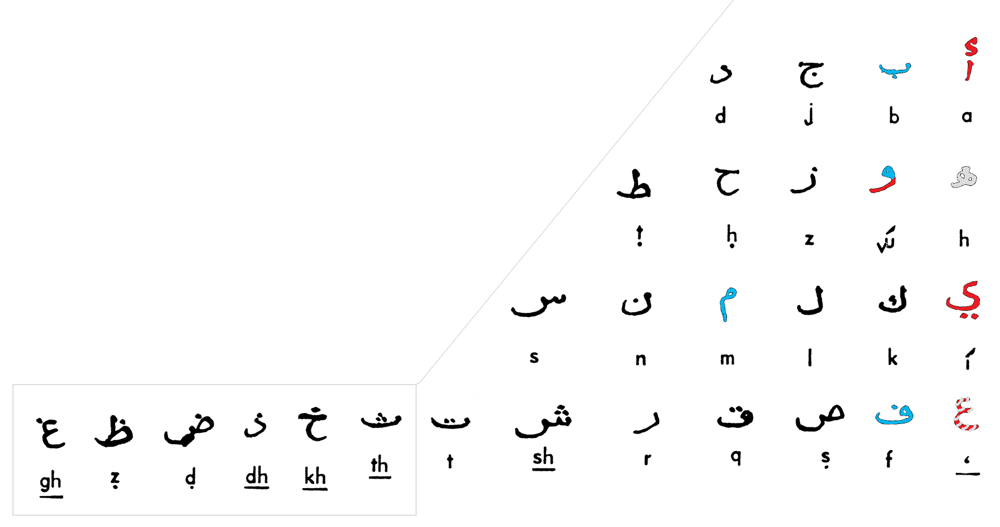
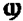

v. 1
The Three Fates
or, some say, Io the sister of Phoroneus,
invented five vowels of the first alphabet,
and the consonants B and T1
 pic.1
pic.1
(early
forms of the alphabet don’t include the last line2,
archaic latin adds only V to that3)
In this article it’s shown
that the letters in alphabet stand not occasionally but
according to their articulatory (and, probably, semantic)
features.
So, vowels break the alphabet
into similar lines of the vOwel-laBial-Linguals4
(pic.1) the exceptions of J, M
& Y are explained further on. (laBials
are the letters, representing sounds pronounced with lips,
Linguals are the letters, representing sounds pronounced
with tongue, vOwels are the letters, representing sounds
pronounced with mere voice. Though for proper pronounciation of O
& especially U we need to use lips (& that’s why U
is burning blue underneath), just as for E & I tongue is
used, but that’s yet an excessive rectification (because we
base our research upon the myth presented as an epigraph to
the work)
In this edition of the article
this structure is verified with latin, greek, jewish, russian
& arabic alphabets. Though it’s also verified with
georgian alphabet, with armenian it’s not. Please
understand the conscious naming nations in minuscule – for
nations bring nothing but nationalism which brings death
& destructions of war, when what humanity needs is
automation & complete autonomy, to make every conscious
human seed able of recreating the whole population &
civilization if needed). The
representation of the alphabet as articulatory matrix
converges it with the syllabaries (so, in japanese kana there’s also 5
rows beginning with vowels & the columns representing
the consonant components of the syllable, and in sanskrit
& hangyl letters are placed according to their
articulatory features)
In the complete accord with
the hellenic myth5, extant in the Hyginus’ list,
labials & linguals can be juxtaposed with those original B
& T.
1
The position of the Y out of
the vowel column was not clear until the following symmetry
was discovered (pic.2).
 pic.2
pic.2
Supposedly the
former system was left for the latter one because of T-part
(the linguals) of rows tending to expand, because of M being
replaced with J by theological reasons (explained on the next
page), because of the U-row added to the alphabet with its Y
& stuff2,3.
It also needs to be noticed
that Y is sort of redundant & in the Netherlands they
write it like that:

Y is also named a Latin
Diphthong6
2
How could the
knowledge of the alphabet structures be lost? It quite well
could because of those baboons fighting the world to ruins and
murdering the elites constantly on the one hand & the
snobbish segregating celestials like pretty much myself on the
other.
But the writing
system, even being rid of its inner matrix, definitely
happened to be much too useful to get rid of.
Position of Y out of the vowel
column & M-J-misplacement weren’t actually the last
mysteries that were to be solved before this article was
brought in this world as a system, not apophenia. For I
couldn’t dare to bring velar & coronal (pic.4) in one
group, as linguals – not even
sure if it’s a proper phonetic term nowadays, for as a rule
the linguals are grouped into several sub-distinguishments7
(but hardly the creators of
the alphabet were that meticulous: after all they told only
about B & T in the myth, thus the introducers of the
special forms of linguals knew about the structure, for they
put it in the special place (backlinguals always precede the
frontlinguals each line (even
in X letter)), (pic4).
But with this additional itemization it was to be understood
why does H stand where it does & it made sense that it
used to be [ʃ] for it’s named ʌʃ & eitʃ, & Bj`o’rk in Human Behaviour
sings it just like that9.
 pic.4
pic.4
As for why would J & M
stand where they do, it's been found that J stands for Jupiter
(the highest patriarchal deity of
the romans) (compare Jovi & Jhvh – first one is another form of Jupiter
(as Bobby for Bobert), the second one is a transliteration
of the highest patriarchal deity of jews) Jah – the same
very name of jewish god, as pronounced by ethiopian rasta)
& M stands for international word Mama8 in all
the representations (and as the
highest matriarchal being of the romans as well) (Maat, Minerva, Mokosh, Mara, Maria,
Mother-goddess, the inner urge made me recall Muses (see representation of alphabets as
musical notation (the next page))
3
& their
mother Mnemosyne there are also the fates, who invented the
alphabet (according to the
myth in the epigraph), &
in greek they are named (Μοῖραι),
also Moira is considered to be a form of the name Mary10
in ireland for example, (מרים) amer comme
la mere) –
MM as the female highest deity of
the culture that created the alphabet. So it's considered a
patriarchal takeover of the previous culture. Quod licet Jovi, non licet bovi & so
on. This proverb was
mentioned because cow represents a potent element of “pagan”
beliefs11. Not only because of Veau d’Or, but also
because M is for М in milk, & that’s what a cow says &
the “horns” of the letter, though Egyptians wrote an (horned)
owl there, though owl says not Mu, but uM12, which
is “intelligence” in Russian – at first sight it’s unlikely
related, though owls do stand for intelligence13.
These reason give bases to consider M & J being
replaced with religious reasons (for in Greek (further in the
article) the same trick Zeus does. Or it might be because M
became a real Mother having given birth to L & N, for
these two are lingual, not labial. Or just because the most of
mess happen to take place in the lines of vowels-division: J
& I became different letters (Iovi, Jovi – it’s both
correct, just as V where now we’d use U (as in Maximum for
example) – there are V in many writings14
The latter explanation is more
solid than the former one, because in hebrew alphabet there’s
no j but ’ sign is used for both i&j as it’s historically
two forms of one letter, just as V was used for both U & V
& even W – the W the most not only it stands between those two
both articulatory and phonetically, for the letter is named wow after
all for sex is wow! – that’s very much the form of the
letter by the way, the ! & though there’s no U-line in
hebrew for it ends at T, the V letter, the most labial of
all the vowels is strict labial in hebrew & put where
the f stands in latin & for F they used pey, the letter
identical to latin p, greek & russian п & so on. In russia they use the word пей[pei] for
“drink” & пой[poi] for “sing”
& in hebrew פ(peh, pheh)
means mouth.
Also the structure of
pra-alphabet, described by Hyginus, tells us that it might be
used as a pentatonica15 with  &
&  for bemol & diez (actually, musical notation is one of
few fields where we need to convey the way it sounds).
for bemol & diez (actually, musical notation is one of
few fields where we need to convey the way it sounds).

The vowels added by the priests of Apollo to his
lyre were probably those mentioned by Demetrius, an
Alexandrian philosopher of the first century BC, when he
writes in his dissertation On Style: ‘In Egypt the priests
sing hymns to the Gods by uttering the seven vowels in
succession, the sound of which produces as strong a musical
impression on their hearers as if the flute and lyre were
used, but perhaps I had better not enlarge on this theme.’1
Latin alphabet does not stand
alone among other writing systems, it’s a member of a pretty
multitudinous family of alphabets,
other members of which should verify or nullify the system
found in the latin alphabet (though some letters are positioned
differently, will the system persist, is it the real system
or just an apophenia?) the
found matrix will be verified afterwards as you’ll be able
to see
4
And supposedly the oldest
member of the group among the used nowadays is the hebrew
alphabet: it includes only the
first four lines of the alphabet, just as was in the ancient
forms of the alphabet2 Probably the most of you don’t know
the following examples of alphabets (well, it’s a good time
for you to make the research by yourself & find how they
sound from books or internets – so you know the examples
given here are exact.

א
ב
ג
ד
ה ו
ז
ח
ט
י
כ ך
ל
מ ם
נ ן
ס
ע
פ ף צ ץ
ק
ר
ש
ת
Hebrew alphabet shows the same
structure: vOwels-Beths-Taws with same M-displacement as in latin.
But in hebrew alphabet I
& J didn’t devide in two different letters, but there’s
י,
standing for both of them, which also stands for something
more, which is יהוה (that very patriarchal highest deity of jews)).
the word is read
right to left (jews & arabs write right to left as if
their zadiks were left-handers.
Though jewish letters are
considered all-consonants, four of them are closest to vowels
(and traditionally are
transliterated into other languages with vowel letters: so ה,
which became voiceless in arabic, in hebrew makes that –a
ending which sounds quite vowel indeed.
In hebrew alphabet
there’s not a trace of any positional distinguishing of back
linguals from front linguals (none of obvious back-linguals: ג, כ,
ק
stand in the same column as c,g,k,q did) which makes
jebrish alphabet closer to the supposed origin (where only b
& t are, not a word about k – notions about this interesting
letter, having appeared in the previous version now are
extorted into a stand-alone article).
Though its
consisting of four lines only takes it even beyond the myth,
for in myth there are five vowels, which means hebrish was canonized before vowel
went out of ו for it
stands in the obvious labials’ column with ב & פ
in it & the only one missing is the very M(מ)
5

The axial symmetry can be also found in the
hebrew alphabet & ain’t it a funky one!
6
pic.7
Α
Β
Γ
Δ
α
β
γ
δ
Ε
Ζ
Η
Θ
ε
ζ
η
θ
Ι
Κ Λ
Μ Ν Ξ
ι
κ
λ
μ
ν
ξ
Ο
Π Ρ
Σ
Τ
ο
π
ρ
σς τ
Υ
Φ Χ
Ψ
Ω
υ
φ
χ ψ
ω
Greek Alphabet contains the
AEIOУ-system too, but it is even more disturbed there
(not only in I-line the reforms took place (the removal of M off
the labials’ column), but also in E-line now-lingual θ (theta) (of which russian θ (фита, fita) descends
& it sounds quite like F (which in latin appears in this
very line) –
this two points allow to suppose that a thousand years ago (if the dating of the adaptation of
greek for russians is correct, of course) greek θ was pronounced as f) removed off the labials’ column with
letter ζ, which, all of the sudden, also stands for the
supreme patriarchal deity’s name, but Zeus, that once used to start
with this letter: Ζεύς, today is put down as Δίας, which is,
surprisingly translated as Jupiter, and hardly is it by an
accident, that in latin God is Deus, which sounds quite as Δίας, and this probably a
coincidence wouldn't worth
mentioning if in latin G didn’t stand in this very line before
h, which is H just as much as η (of all greek
dialects only ionic dialect considered H vowel, but it was
post-reform change, "vowels added by the priests of Apollo to
his lyre" but unfortunately modern greek took after that very
dialect), before which
ζ(Ζ) stands. Θεά is also a word in greek for the goddess, though dictionaries give θεός for god sometimes, though Θεά is Фея [feya] in russian, which means fairy, but a
fairy-guy is a little too tender for a god (though in word “theology” they use just that
word). Θεία (name of the
first moon goddess, the sun’s mother) is transliterated as Фейя (Feya). Regarding θita
being obscene16 in old russia it’s possible to
assume that its connotation was that of female genitals
(note that ז in hebrew) has a connotation of male genitals)17
Also the post-inclusions in
I-line are of the same amount as in latin, but instead of J
there’s ξ which actually looks very much like ζ, which in its turn is the inclusion in the
E-line (also they both look & sound very much like snakes18
- probably the snake-worshippers
had their impact on Hellenic culture in some historic period
(it can be whether verified or falsified by further
research) – note that in
jewish alphabet there’s neither J (for ’ is used for both of
them
7
I & J
sounds) nor ξ thus is verified
its ancient ancestry as of the older writing system than latin
& greek, for it was ceased for centuries before the most
reforms took place, though it itnessed the M-overthrownment -
& it doesn’t have no U-line, though the I & Y are the
two most problem lines – for I brought J & U brought V. The name Ivan/John
not only illustrates that (in
hebrew o,u,v,w all are transliterated with the letter ו which is positioned as if
it’s not really a vowel) but also raises the question of the vowelity of
h which somehow appears in the alphabetic position of semitic
ה & ه though it doesn’t
sound all vowel, especially in the arabic version of it,where it
sounds quite like latin h which appears on a vowel branch in 19
also in greek the
word haploid turns out to be απλοιδ
The position of ω out of the vowel column can be
explained by the axial matrix,
though the probability of such a symmetry for the last line
is about 50% (axial
symmetry would verify the last line if the vowel stood at
the χ position as well, but not in φ or ψ )
 pic.8
pic.8
H in greek was considered
vowel only in ionic dialect. In every greek dialect, except ionic, E was
followed by F, but until I find an original abecedary of
that period, I leave it here. Doesn’t it look like EЁ in russian
alphabet that comes after the greek one and whether includes
or excludes the letter Ё. Is it because
of some kind of taboo?
8
Though arabic alphabet is
often arranged as ا ب پ ت ث ج چ ح خ د ذ ر ز ژ سش ص ض ط ظ ع غ ف ق ک گ ل من ه و ی, the most of the letters
have numeric values20 different from this order (which is given just to see
letters arranged to their forms) – just as in hebrew, where
they have built kabbalah upon this concept (the h at the end of the
“kabbalah” word indicates that there’s ה at the end of it (קַבָּלָה), but it sounds pure vowel
for me). Having the letters
positioned according to their number we can get the alphabet
analogue (so called abjad)

ا ب ج د
ه و
ز
ح ط
ی ک ل
م
ن س
ع ف ص ق ر ش ت ث خ ذ ض ظ
غ
numberless in farsi: پп چч ژж گг
The order of the
letters (till the
letter ت inclusive), as in hebrew,
allows us to put ه in the vowel
position also upon the
reasons given few lines before (at the end of
the greek part).

9

Russian alphabet having descended from the greek uncial &
though it doesn’t have no obvious labial in the second line,
the letter θ (fita) though was replaced to the
bottom of the alphabet before having been neglet, had the
numeral value21 of 9 (which puts it in the second
line) It is related to the one used by kopts – in both there
are extra line after greek ω-likes present: and
like in russian it goes in cluster alike to шщ

10
(ʃʌi) not only looks like russian ш, but also sounds that way. Probably semitic ש is to blame (though
it’s an ancient letter, most probably deriving from the
teeth-ideogram (in hebrew this letter means teeth or a tooth(& not only – well, you can
check it yourself for in the eon of the internet the
regulatury dogma is to be reformed)though ש, just
as russian ш even more resemble the previous koptic letter,
the one which resembles greek omega, there's another letter,
we can only meet today on tefilin, ש of four horns, because
of lack of which hebrew alphabet is considered incomplete.
And not only koptic, but also russian alphabet has щ,
standing not for sh, but for sch, the softer one, isn't it
the very same lost letter? But doesn't hebrew alphabet have
ש standing for both s & sh, doesn't that sh dot
represent the fourth petel/horn/finger? or, as far as it is
a tooth, then the fourth root of a tooth, as of an upper
wisdom tooth, for example). (the
similar letter appears in phoenician & arabic)
The funny thing
is  &
&  remind
russian Ш & Щ, who follow
eachother at the very same position (only 6 letters are until
the end)
remind
russian Ш & Щ, who follow
eachother at the very same position (only 6 letters are until
the end)
Of all the
alphabets shown above the russian one happens to be the most
deviant.
It doesn’t even
fall into the axial matrix properly. (not implying it
does fit the linear matrix)
Georgian alphabet fits both the matrices
properly:

Armenian alphabet doesn’t fit in any. (because Mashtots didn't
invent it, he mutilated it. but I will speak about it in the next volume)
11
1 Graves, Robert (1990)
[1955]. The Greek Myths 1.
Penguin Books. ISBN 978-0-14-001026-8. (chapter “Alphabet”).
(неточный перевод на русский: http://www.sno.pro1.ru/lib/graves/52/52.htm)
2 Финикийский
и друзья http://www.shiachat.com/forum/topic/234964878-tabernacle-is-greater-than-kaaba/?p=1957831 (фриковатый линк, но
шикарные иллюстрации: например /forum/uploads/monthly_09_2009/post-25505-1252265968176.gif
3 Архаичная
Латынь http://www.codex99.com/typography/15.html
(иллюстрация:
http://www.codex99.com/typography/images/ancient/latin_sign.gif)
4 В
доказательство того, что даже k является язычным, приложена рентген-фотография.
найдено в
http://ling.cass.cn/yuyin/english/yinlu/pic.htm
5 отрывок
из Гигина на латыни http://www.mediterranees.net/mythes/ulysse/guerre_troie/palamede.html
(в
этой работе, тем не менее, за основу взят миф в записи Роберта
Грейвса1, не только потому, что он в большей
степени совпал с уже обнаруженными закономерностями, но и
потому, что миф в записи Гигина явно неточен (слово septem (семь) не соответствует количеству
представленных букв)
6 http://www.scribd.com/doc/154567093/Encryption-and-Decryption-of-the-Alphabetical-Hieroglyphs (Y)
7 Фонетический
алфавит http://www.yorku.ca/earmstro/ipa/consonants.html
8 Try & take
John 1:1 as a riddle with that word
9 Coronal ʌʃ http://www.youtube.com/watch?v=GCGveA39VYA
10 Mary http://en.wikipedia.org/wiki/Mary_(given_name)
11 Io (мифология) https://en.wikipedia.org/wiki/Io_(mythology)
12 Сова
говорит уM http://www.youtube.com/watch?v=dZ_QguAsVTA
13 Сова
Афины http://en.wikipedia.org/wiki/Owl_of_Athena
14 Roman square capitals http://upload.wikimedia.org/wikipedia/en/2/21/Trajan_inscription_duotone.jpg
15 the best text i could find on hellenic music http://www.gutenberg.org/files/40288/40288-h/40288-h.htm
16 Гоголь
«Мёртвые Души» http://feb-web.ru/feb/gogol/texts/ps0/ps6/ps6-005-.htm
(сноска в конце страницы)
17 ז http://en.wikipedia.org/wiki/Zayin
18 ξ hiζζeζ http://www.youtube.com/watch?v=jT6qZpdGeIw
19 (from 6)
http://htmlimg3.scribdassets.com/3wa9zw4i9s37sugu/images/3-d10cae70ff.png
20 Числовые
значения арабского алфавита http://bahai-library.com/images/g/gail_guide_transliteration_big.gif
21 Числовые
значения русского алфавита http://genobooks.narod.ru/Azbuka/Azbuka-5.gif
(небезынтересен девятый
номер в глаголице) http://histans.com/EHU/Hh/Glagolycya.jpg
12
{kind=link}
{kind=link}
{kind=link}
{kind=link}
{kind=link}
{kind=link}
{kind=link}
{kind=link}